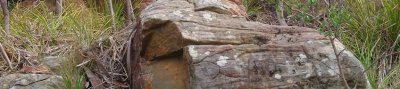

michael oates
I make things
I make things
>
This site was written in VS Code using straight CSS
and HTML. I'm tinkering with things pretty much constantly.
>
I'm currently working on a simple todo tool. You can see it here: https://tehoatse.github.io/todo.html.
It's all client-side vanilla js. All the data is stored in the browser localstorage. It works for what i need for now and was interesting to make.
>
I went to Uni at Monash and learned about everything computing related. I didn't finish the degree but the things I learned the most about were:
- Object Oriented Design
- Java
- Relational Database Theory
- Project Management
>
I'm studying Eloquent Javascript. It's entertaining and instructional.
>
I have an extensive Udemy habit. It's
really handy for modernising my skills and getting exposed to new frameworks and tools.
They've got a sale on right now and learning things is good so I'll probably buy
more courses. At the moment I'm doing a web development bootcamp
which has inspired me to make this.
>
I'm writing a game called Greyhound.
It's in C# and I intend
to use Monogame to create an engine for it.
I'm using Visual Studio 2019 and I'm planning and upgrade to the new VS in the near future. The idea of the
game is an animal racing simulator mixed with a science fiction story.
>
I live outside the southern Tasmanian town of Bagdad. We own a bit of land
and we're members of
Gardens for Wildlife
and
Land for Wildlife.
Wombats live on the same land as us. This is what my back yard looks like:

>
When I'm not making things or learning things I read
fiction, play computer games and watch tv. I also listen to a lot of music.
- We're watching Twin Peaks. I really liked the original series. We saw the prequel movie which was very grim except a few moments, and now we're watching the Return. Can't wait for the Dougie story-line to end.
- I've finished reading the Viriconium collection and now I've decided to reread the Kefahuchi Tract series. It's for research.
- I'm not really playing any games at the moment. I'll play a little RDR2 in the evenings.
- I'm trying to listen to Australian music in January. Alien Nosejob and EXEK are high on my list.